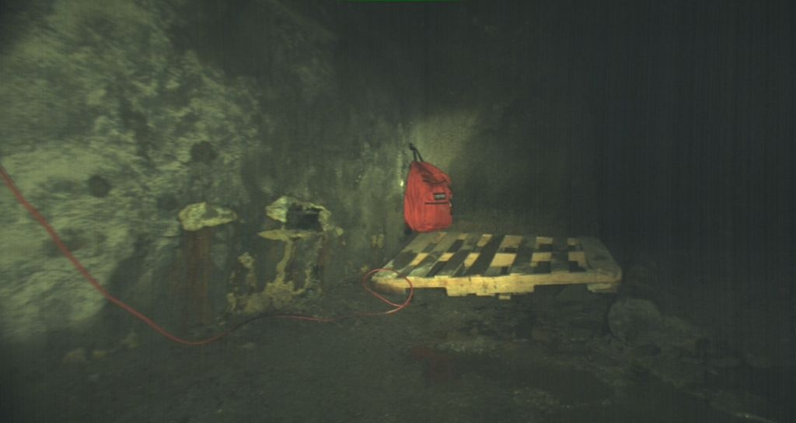
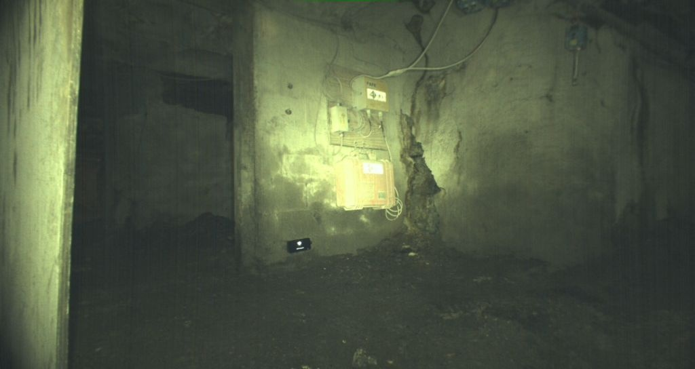
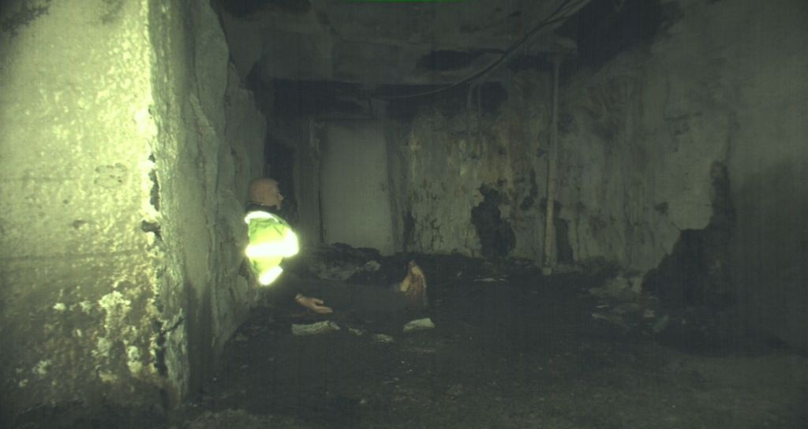
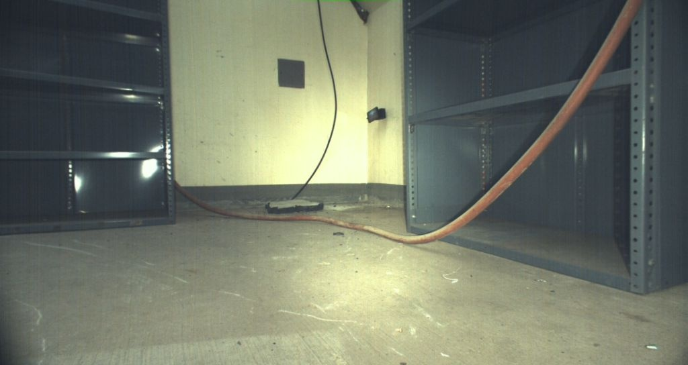
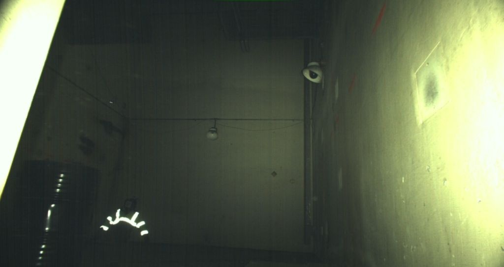
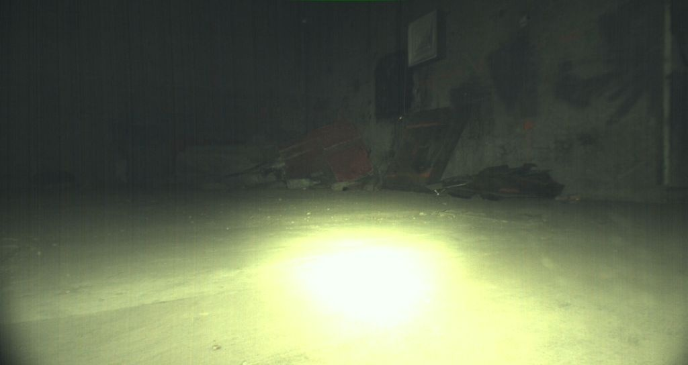

This paper describes the architecture and implementation of heterogeneous unmanned ground vehicles (UGVs) and blimp robot teams used to navigate unknown terrains in subterranean environments for search and rescue missions. UGVs are equipped with numerous sensors and computations for achieving accurate perception as well as simultaneous localization and mapping, and blimps have a long flight time and collision tolerance when traversing uneven terrains. The perception and autonomy system was designed to satisfy the DARPA Subterranean Challenge requirements. We proposed the use of millimeter-wave radars for navigation through smoke by using cross-modal representations. The representation was then integrated in deep reinforcement learning. A key aspect of such data-driven autonomy using simulation for training deep neural networks is sequential decision-making for collision avoidance. The navigation system was tested in the Urban Circuit. The communication module included nodes that could be deployed through mesh Wi-Fi and XBee, as a spherical shape to be shot, dropped, or a miniracecar as a mobile node. Because of the uncertainty of non-line-of-sight, multipath propagation, and fading of the reception in various subterranean environments, analyzing the propagation and radio signal strength index (RSSI) of various modules is difficult and should be determined from field tests. Finally, we presented cloud analysis tools for perception benchmark and an integrated solution for future research.
We provide around 6000 ground truth labels for semantic segmentation benchmark of artifacts extracted from the DARPA released rosbags. The original rosbags were collected by DARPA and can be found here
Click on the link to download compressed images and json files.
| # | Route | Rosbag | Environment | Data | # Images | Thumbnail |
|---|---|---|---|---|---|---|
| 1 | Tunnel Experimental | Link | Mine Tunnel | 1063 |  | |
| 2 | Tunnel Safety Research I | Link | Mine Tunnel | 632 |  | |
| 3 | Tunnel Safety Research II | Link | Mine Tunnel | 929 |  | |
| 4 | Urban Alpha Course I | Link | Nuclear Power Plant | 688 |  | |
| 5 | Urban Alpha Course II | Link | Nuclear Power Plant | 1718 |  | |
| 6 | Urban Beta Course II | Link | Nuclear Power Plant | 927 |  |